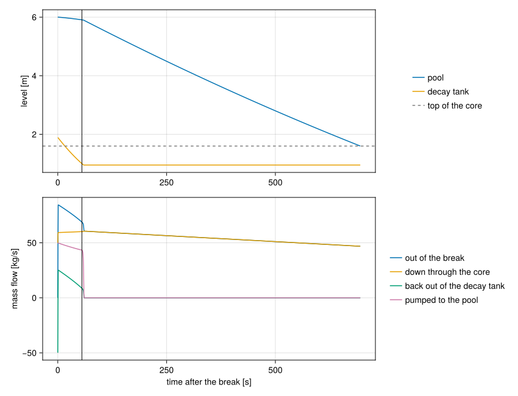
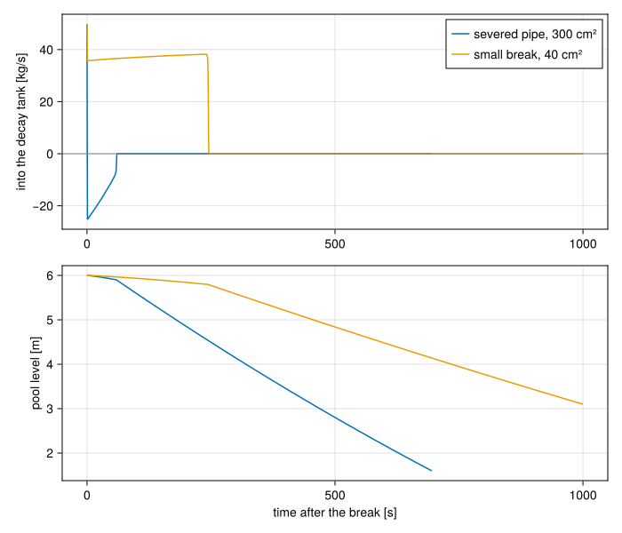

Loss of coolant from a pool and its decay tank
Download this tutorial as a Julia script or a Jupyter notebook.
In a pool-type research reactor the core sits at the bottom of an open pool. The primary flow runs down through the core and out of the pool, through a pipe in the basement, into a decay tank where the short-lived activation products in the water die away. A pump returns the water from the decay tank to the pool.
This tutorial breaks the basement pipe. The break is a single hole, and two tanks drain through it: the pool, down through the core, and the decay tank, backwards through its own inlet line. How the two share the hole, and when each stops feeding it, depends on the pressure at the break, which both of them set. The run ends when the pool falls to the top of the core.
Along the way it shows the choices a Tank offers for the steady state: whether its level is pinned, and whether its temperature is held or follows the water that flows in.
The plant is made up for the tutorial. Its dimensions are of the right size for a few megawatt pool reactor, but they describe no particular one.
using STREAMusing STREAM.Components: Tank, Environment, Orifice, Pump, ChannelHeatFlux, Gravity, ResistorFromKnownPoint, StateMachine, machine_callbacks, trip!, reset!using STREAM.Assemblies: inseries, weightedusing STREAM.LocalLoss: discharge_cdusing ModelingToolkit: @named, @parameters, connect, mtkcompile, unknownsusing OrdinaryDiffEq: Rodas5Pusing SteadyStateDiffEq: DynamicSSElevations
Each tank measures its level, and the height of its nozzles, from its own floor. The pipes between the tanks carry the changes in elevation between them, as Gravity elements. Here every elevation is measured from the pool floor, and the pipes' heights are differences of them.
z_core_top, z_core_bottom = 1.6, 1.0 # the core, from the pool floor [m]z_return = 5.0 # where the return line enters the pool [m]z_pipe = -4.8 # the basement pipe, and the break in it [m]z_tank_floor = -5.0 # the decay tank's floor [m]tank_inlet, tank_suction = 0.5, 0.2 # decay tank nozzles, from its floor [m]L_pool, A_pool = 6.0, 8.0 # pool level [m] and surface area [m²]A_tank = 4.0 # decay tank surface area [m²]T_pool = 35.0 # [°C]The tanks
A Tank has a free surface and a nozzle per connection, each at its own height. A nozzle's pressure is the surface pressure plus the head of water above it, so the tanks also fix the loop's absolute pressure: no other anchor is needed.
A tank's level is the integral of its net inflow. In a steady state the net inflow is zero whatever the level, so on its own the level is undetermined. Pinning it, the default, holds it at L0 for the steady solve. Here only the pool is pinned. The decay tank is free: its level settles where the flow arriving from the pool matches what the pump draws, which is the steady state the plant actually runs at. Pinning one tank and freeing the other is like fixing one pressure in a loop: with both free, any shift of water from one tank to the other would be another steady state, and the solve could not choose.
The temperatures differ too. The pool is held at 35 °C, fixed_temperature=true, which stands in for the heat exchanger that keeps it there and which this model leaves out. The decay tank follows its energy balance, fixed_temperature=false, so in the steady state it takes the temperature of the water flowing in, the core outlet's.
@named pool = Tank(; area=A_pool, L0=L_pool, ports=(core=z_core_top, ret=z_return), T0=T_pool)@named dtank = Tank(; area=A_tank, L0=2.0, ports=(inlet=tank_inlet, suction=tank_suction), T0=T_pool, fixed_temperature=false)A tank with no inflow in the steady state is the one case left. With its temperature held, it needs nothing more. With fixed_temperature=false nothing would set its temperature, and such a run starts from the declared state rather than a steady solve; Set up a tank for the steady solve shows each case.
The core
The core is 400 identical plate channels in parallel. One channel stands for all of them through weighted, as in the pool loss-of-flow tutorial. Each channel's walls take an even share of the core's power, a parameter so that the transient can drop it to decay heat.
N = 400P_rated = 2.0e6 # [W]geometry = PipeGeometry_rectangular(0.6, 0.067, 0.0024, 0.063)n = 10@parameters P_core = P_ratedq_wall = P_core / N / (2 * geometry.heated_parts[1] * geometry.L) # each face [W/m²]@named ch = ChannelHeatFlux(; n, geometry, g=-G_EARTH)core = weighted(N, ch; name=:core)The pipes, the pump and the valves
The pipes are quadratic resistances, each set by one design point at the design flow of 50 kg/s, with the elevation each one climbs or falls. The pump's head lifts the water back up to the pool and pushes it through the return line.
ṁ_design = 50.0@named down = Gravity(z_pipe - z_core_bottom)@named down_loss = ResistorFromKnownPoint(; dp=-6.6e4, ṁ=ṁ_design, T=45.0)@named tank_line = ResistorFromKnownPoint(; dp=-2.0e4, ṁ=ṁ_design, T=45.0)@named tank_rise = Gravity((z_tank_floor + tank_inlet) - z_pipe)@named pump = Pump(1.2e5)@named lift = Gravity(z_return - (z_tank_floor + tank_suction))@named return_line = ResistorFromKnownPoint(; dp=-3.0e4, ṁ=ṁ_design, T=45.0)Three Orifices complete the plant. Two are isolation valves, one on each of the decay tank's lines, and both follow one StateMachine: the protection system shuts them together. They were opened long before the run starts, initial_time=-100.0, so they are fully open in the steady state. They take 5 s to shut.
isolation = StateMachine(; initial_state=:OPEN, initial_time=-100.0)@named return_valve = Orifice(; area=0.03, cd=0.9, machine=isolation, open_rate=0.2)@named tank_valve = Orifice(; area=0.03, cd=0.9, machine=isolation, open_rate=0.2)The third is the break: the basement pipe, 20 cm across, severed. It discharges into an Environment, the room at atmospheric pressure. Its machine starts shut, so the steady state is the intact plant, and once tripped the hole opens fully over a second.
hole = StateMachine(; initial_state=:SHUT)@named breach = Orifice(; area=0.03, cd=discharge_cd(:sharp), machine=hole, open_rate=1.0, dp_linear=1e-3)@named room = Environment(; T=T_pool)The break sits at the junction of the core's outlet pipe and the decay tank's inlet line. inseries starts and ends at the tanks' nozzles, and connect makes the junction:
connections = [ inseries(pool.core, core..., down, down_loss), connect(down_loss.outlet, tank_line.inlet, breach.inlet), inseries(tank_line, tank_rise, tank_valve, dtank.inlet), inseries(dtank.suction, pump, lift, return_line, return_valve, pool.ret), inseries(breach, room.port), ch.q_left .~ q_wall, ch.q_right .~ q_wall,]@named plant = assembly(connections, pool, dtank, core..., down, down_loss, tank_line, tank_rise, tank_valve, pump, lift, return_line, return_valve, breach, room)sys = mtkcompile(plant)foreach(println, unknowns(sys))dtank₊suction₊ṁ(t)
down_loss₊outlet₊p(t)
down_loss₊outlet₊T(t)
breach₊inlet₊ṁ(t)
ch₊inlet₊ṁ(t)
(ch₊T(t))[9]
(ch₊T(t))[8]
(ch₊T(t))[7]
(ch₊T(t))[6]
(ch₊T(t))[5]
(ch₊T(t))[4]
(ch₊T(t))[3]
(ch₊T(t))[2]
(ch₊T(t))[1]
dtank₊T(t)
dtank₊L(t)
pool₊L(t)The levels of both tanks and the decay tank's temperature are among the unknowns. The pool's temperature is not: it is held.
Normal operation
The decay tank's level is free in the steady solve, set in the operating point. Its flows start at the design flow, and the solve integrates to where the plant settles:
flows = filter(u -> occursin("ṁ", string(u)), unknowns(sys))op = [[f => ṁ_design for f in flows]; sys.dtank.pinned => false]sol_ss = solve_steady(sys, op; solver=DynamicSS(Rodas5P()), abstol=1e-10, reltol=1e-10)sol_ss.retcodeReturnCode.Success = 1The decay tank found its own level, where the pump draws exactly what arrives from the pool:
(level=sol_ss[sys.dtank.L], inflow=sol_ss[sys.tank_line.inlet.ṁ], pumped=sol_ss[sys.pump.inlet.ṁ])(level = 1.8866595812469316, inflow = 49.841998599600245, pumped = 49.84200515538824)@assert isapprox(sol_ss[sys.tank_line.inlet.ṁ], sol_ss[sys.pump.inlet.ṁ]; rtol=1e-6)@assert tank_inlet < sol_ss[sys.dtank.L] < 4.0and it took the temperature of the water the core sends it, which the core's power and flow set:
ṁ_core = N * sol_ss[sys.ch.inlet.ṁ]T_out = sol_ss[sys.ch.T_out]@assert isapprox(sol_ss[sys.dtank.T], T_out; atol=1e-6)@assert isapprox(P_rated, ṁ_core * cₚ(H2O, (T_pool + T_out) / 2) * (T_out - T_pool); rtol=1e-3)(decay_tank=sol_ss[sys.dtank.T], core_outlet=T_out)(decay_tank = 44.60206283098676, core_outlet = 44.60206261425933)The break
At $t = 0$ the pipe breaks, and the reactor scrams. The core's power falls to decay heat, taken here as a constant 4% of rated: more than it is after the first minute, so the heat-up is overstated. Add decay heat to a transient shows how to follow the real curve.
The protection system watches both tanks: a pool 20 cm below normal, or a decay tank down to 1 m, shuts the isolation valves. A third machine stops the run when the pool reaches the top of the core, where this model, with no heat transfer to steam, stops describing the plant.
push!(isolation, (:OPEN => :SHUT, pool.L < L_pool - 0.2, "low pool level"))push!(isolation, (:OPEN => :SHUT, dtank.L < 1.0, "low decay tank level"))watch = StateMachine(; initial_state=:COVERED, abort_states=(:UNCOVERED,))push!(watch, (:COVERED => :UNCOVERED, pool.L < z_core_top, "core uncovered"))trip!(hole, 0.0; state=:OPEN, cause="pipe break")Both tanks are released for the transient, the pool from its pin and the decay tank from the operating point's. The break opens within a second and the flows change fast while it does, so the run asks for tighter tolerances than the default to follow them.
times = range(0.0, 1000.0; length=2001)overrides = [sys.pool.pinned => false, sys.dtank.pinned => false, P_core => 0.04P_rated]tolerances = (abstol=1e-8, reltol=1e-8)sol = solve_transient(sys, sol_ss, times; overrides, tolerances..., callbacks=machine_callbacks(sys, hole, isolation, watch))isolation.log2 states entered:
t = -100.0 s OPEN initial
t = 55.4144 s SHUT low decay tank levelwatch.log2 states entered:
t = 0.0 s COVERED initial
t = 695.076 s UNCOVERED core uncoveredTwo tanks, one hole
The break's flow is set by the pressure at the junction, and each tank feeds the junction through its own line. Right after the break the junction's pressure collapses, and both tanks drain into it: the pool down through the core, faster than before, and the decay tank backwards through its inlet line, while the pump keeps drawing on it too. The pump keeps the pool topped up meanwhile, so the decay tank's inventory buys the pool time.
t_isolated = isolation.t_stateusing CairoMakiefig = Figure(size=(850, 650))ax1 = Axis(fig[1, 1]; ylabel="level [m]")lines!(ax1, sol.t, sol[sys.pool.L]; label="pool")lines!(ax1, sol.t, sol[sys.dtank.L]; label="decay tank")hlines!(ax1, [z_core_top]; color=:gray, linestyle=:dash, label="top of the core")Legend(fig[1, 2], ax1; framevisible=false)ax2 = Axis(fig[2, 1]; xlabel="time after the break [s]", ylabel="mass flow [kg/s]")lines!(ax2, sol.t, sol[sys.breach.inlet.ṁ]; label="out of the break")lines!(ax2, sol.t, N .* sol[sys.ch.inlet.ṁ]; label="down through the core")lines!(ax2, sol.t, -sol[sys.tank_line.inlet.ṁ]; label="back out of the decay tank")lines!(ax2, sol.t, sol[sys.pump.inlet.ṁ]; label="pumped to the pool")Legend(fig[2, 2], ax2; framevisible=false)for ax in (ax1, ax2) vlines!(ax, [t_isolated]; color=:black, linewidth=1)endlinkxaxes!(ax1, ax2)fig
The black line marks the isolation. The decay tank reached 1 m first, about a minute in. From then on it holds what is left, and the pool drains alone, a little more slowly as its head falls, until the core uncovers. After the isolation, all the water leaving the pool goes down through the core and out of the break, so those two lines coincide.
All the water is accounted for: what is in the two tanks, plus what has left through the break, is what they started with. The pipes hold none in this model, so nothing else counts.
spilled = [0.0; cumsum((sol[sys.breach.inlet.ṁ][1:end-1] .+ sol[sys.breach.inlet.ṁ][2:end]) ./ 2 .* diff(sol.t))]inventory = sol[sys.pool.M] .+ sol[sys.dtank.M]@assert maximum(abs.(inventory .+ spilled .- inventory[1])) < 1e-4 * inventory[1](start=inventory[1], spilled=spilled[end], left=inventory[end])(start = 55141.09252646644, spilled = 38660.30891420509, left = 16479.62927156592)The decay tank's temperature hardly moves through all of it. Water leaving a tank leaves at the tank's temperature and changes nothing, and only water flowing in can change it. The decay tank only lost water, apart from the first second, before the flow in its inlet line turned round, when a little of the cooler water from the scrammed core still arrived.
extrema(sol[sys.dtank.T])(44.597018935226515, 44.60206283098676)A smaller break
Whether the decay tank feeds the break at all depends on the pressure at the junction. A smaller hole passes less, so the junction's pressure stays higher, and the pool's head, the larger of the two, can keep it above the decay tank's. The break's area is a parameter, so the same compiled model runs it. The machines remember the last run, so they are reset first.
reset!.((hole, isolation, watch))trip!(hole, 0.0; state=:OPEN, cause="pipe break")small = solve_transient(sys, sol_ss, times; overrides=[overrides; sys.breach.area => 0.004], tolerances..., callbacks=machine_callbacks(sys, hole, isolation, watch))isolation.log2 states entered:
t = -100.0 s OPEN initial
t = 240.51 s SHUT low pool levelfig = Figure(size=(700, 600))ax1 = Axis(fig[1, 1]; ylabel="into the decay tank [kg/s]")lines!(ax1, sol.t, sol[sys.tank_line.inlet.ṁ]; label="severed pipe, 300 cm²")lines!(ax1, small.t, small[sys.tank_line.inlet.ṁ]; label="small break, 40 cm²")hlines!(ax1, [0.0]; color=:gray, linewidth=1)axislegend(ax1; position=:rt)ax2 = Axis(fig[2, 1]; xlabel="time after the break [s]", ylabel="pool level [m]")lines!(ax2, sol.t, sol[sys.pool.L])lines!(ax2, small.t, small[sys.pool.L])linkxaxes!(ax1, ax2)fig
With the small break, the flow in the decay tank's inlet line never turns round: pool water keeps arriving there, and the break takes only part of what comes down through the core. The decay tank still loses water, to the pump, until the low pool level isolates it some minutes in. The pool drains far more slowly, and has not reached the core when the run's 1000 s are up. Which tanks a break drains is not a property of the hole alone, but of the pressures around it.
isolated_small = isolation.t_statebefore = small.t .< isolated_small@assert all(small[sys.tank_line.inlet.ṁ][before] .> 0)@assert isolation.log[end].cause == "low pool level"@assert watch.state === :COVERED@assert minimum(sol[sys.tank_line.inlet.ṁ]) < 0What next
The break here discharged single-phase water the whole time. Model a break shows how to check afterwards that the water at the break's throat stayed below saturation, and how to shut a line when a tank's level passes its nozzle.